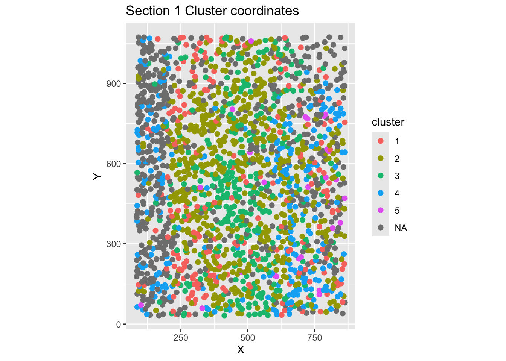
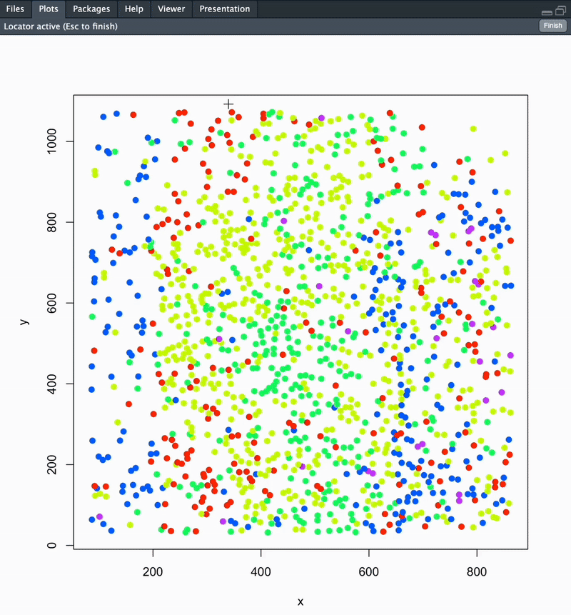
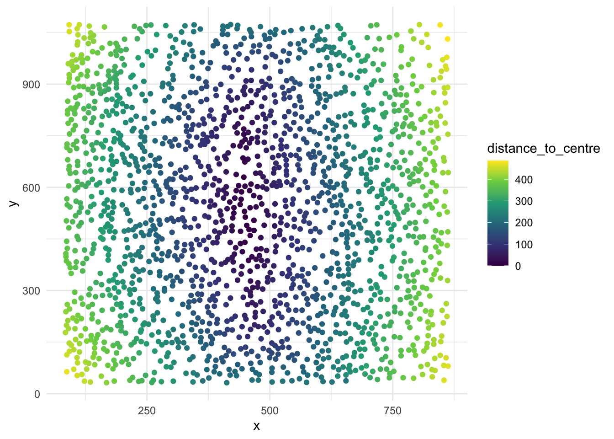
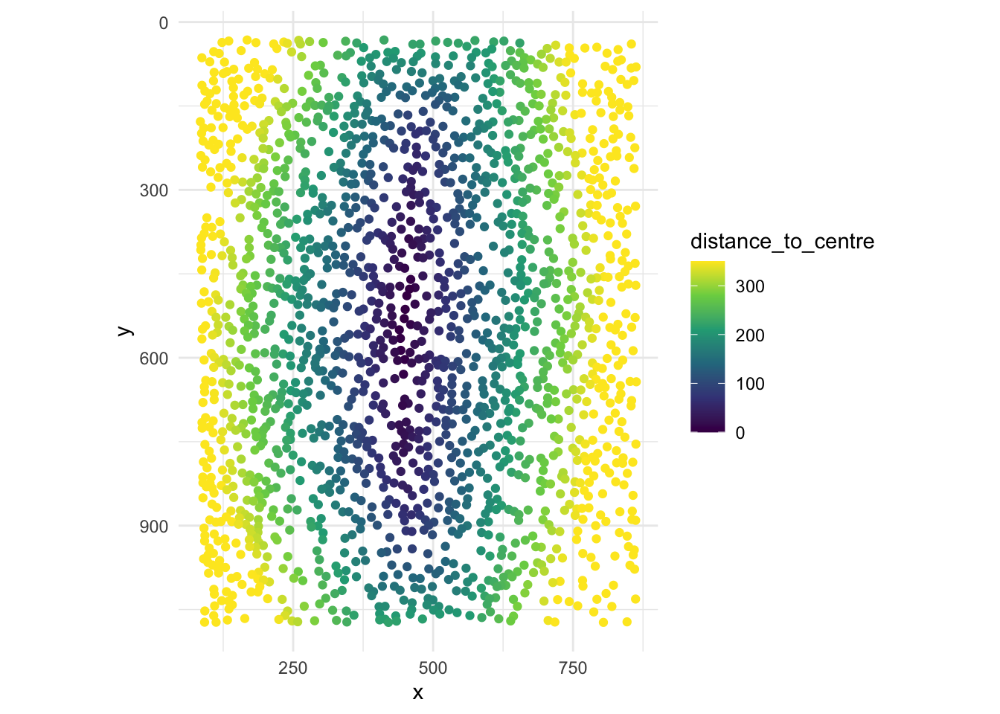
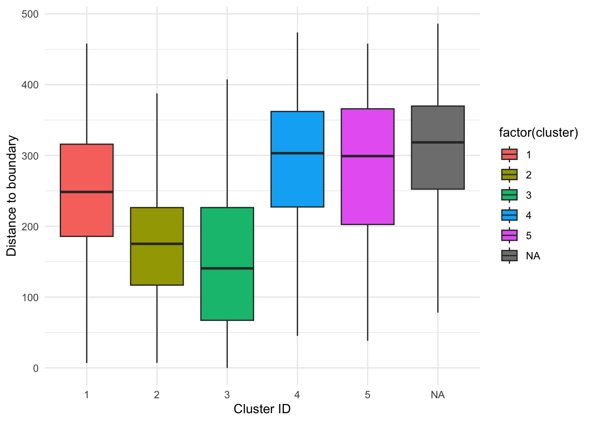
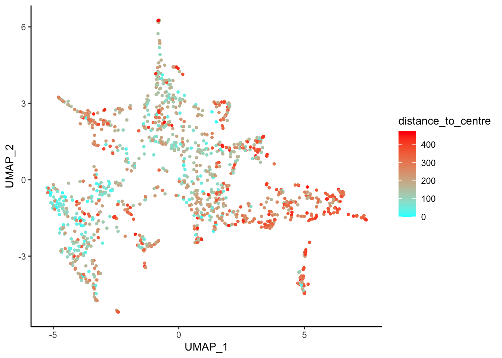
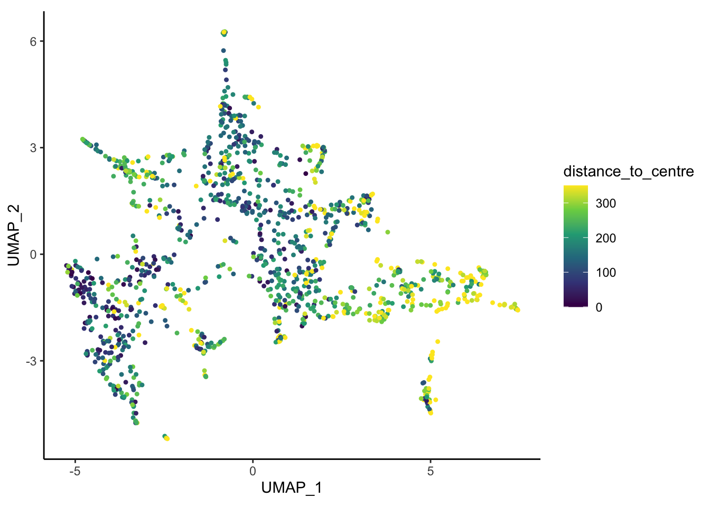
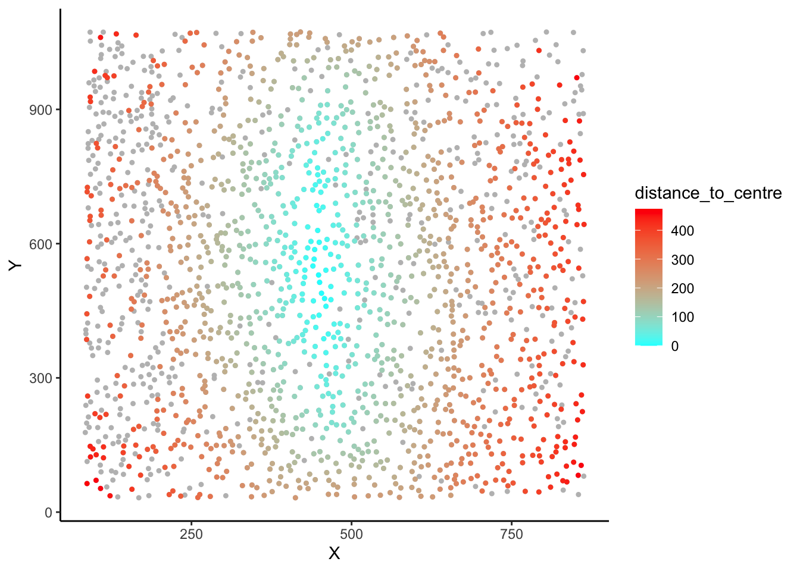

# To get started, load the ggplot2 and scales packages
# note: if you get "Error in library(...) : there is no package called"
# please install the packages first!
library(ggplot2)
library(scales)Geographic Analysis
Video Tutorial
The following video tutorial demonstrates how to perform and visualize a basic geometric analysis in RUHi for your mFISH object. It also demonstrates how to add custom metadata to your mFISH object.
Geographic Analysis Tutorial
Load additional libraries for creating polished plots
Extracting cell spatial coordinates with getCoords()
Get cell coordinates, cluster ID and metadata information from an mFISH object, and optionally rotate cell XY coordinates.
This function will return a dataframe with XY coordinates, cell ID, cluster ID, and metadata (anum, etc.) for a single mFISH object section. If rotate_coords = TRUE, the adjusted XY coordinates will be stored in your dataframe output, and visualized in the plot.
Note: cluster NA are cells that were not filtered based on your specified PAC threshold upon creating the mFISH class object, and running ruFilter().
# Optionally rotate your section coordinates by specifying:
# rotate_coords = TRUE, and your desired rotation with theta_deg = 90.
# (Example: coordsSection_1 <- getCoords(myobj, section_id = "1", rotate_coords = TRUE, theta_deg = 90)
coordsSection_1 <- getCoords(original_mfish_obj = myobj, section_id = "1", rotate_coords = F)Coordinates have been stored.
Please name the dataframe as: coordsSection_1Perform geometric analysis with analyzeDistance()
Calculate the distance along and away from a user-defined boundary using mFISH cell coordinates. This is used to investigate spatial relationships between cells. This can be performed to identify cell distances away from a unique ROI, a nucleus edge, distance from white matter or pial surface, etc!
Once you run this function, your section’s cells will be plotted in space coloured according to cluster. You will be prompted to point-and-click your landmarks to define your boundary. Once this is completed, directly hit the ESC key on your keyboard.
The final output of this function is a dataframe with cell ID, coordinates, cluster ID, distance along and distance away from your defined boundary. Distance metrics are available as raw (microns) and normalized (0-1) outputs. See below for details.
Running this function will compute 4 metrics:
distance_to_boundary,distance_along_boundary,normalized_distance_to_boundary&normalized_distance_along_boundary. (Normalized to the range of distances along/to the boundary per section; values will range from 0–1).
It will also save 4 plots in your working directory:
1. Histogram of distances to boundary
2. Histogram of distances along boundary
3. Cell IDs in section, color-coded by distance to boundary
4. Cell IDs in section, color-coded by distance along boundary
# You can also specify which cluster numbers to highlight
# and specify the highlight colour. The default colour is black.
# (Example: section1data <- analyzeDistance("section1", coordsSection_1, highlight_cluster.1 = 1, highlight_cluster.2 = 2, highlight_colour = 'black')
section1data <- analyzeDistance("section1", coordsSection_1)
#### To change plot save location: update your working directory using setwd('path/to/folder') ####
Saving 7 x 5 in image
Saving 7 x 5 in image
Saving 7 x 5 in image
Saving 7 x 5 in image
Name this file as:[1] "section1data"Optional for polished plots: perform custom normalization, and visualize geometric analysis results using ggplot()
#### These steps can be skipped depending on analysis needs ####
# For a core/shell analysis, shift distance_to_boundary
# values so that the minimum value becomes zero. This simplifies the distance to centre
# values for further visualizations.
section1data$distance_to_centre <- section1data$distance_to_boundary -
min(section1data$distance_to_boundary)
# Plot the cells in the section, coloured by distance_to_centre values
ggplot(section1data, aes(x = x, y = y, col = distance_to_centre)) +
geom_point() +
scale_color_viridis_c() +
theme_minimal()
# You can also adjust legend colour limits, flip to match the raw
# confocal microscopy image, and fix the aspect ratio for a polished plot.
ggplot(section1data, aes(x = x, y = y, col = distance_to_centre)) +
geom_point() +
scale_color_viridis_c(
limits = c(0, 350),
oob = scales::squish) +
theme_minimal()+
scale_y_reverse()+
coord_fixed()
# Create boxplots displaying distance to centre data grouped by cluster ID
ggplot(section1data, aes(x = factor(cluster), y = distance_to_centre, fill = factor(cluster))) +
geom_boxplot(outlier.shape = NA) +
labs(x = "Cluster ID", y = "Distance to boundary")+
theme_minimal()
Optional step for data with multiple sections: merge section data together using rbind()
#### Only needed if you have multiple sections ####
allSectionData <- rbind(section2data, section3data)Add geometric analysis output (or any custom metadata) back to a class mFISH object using metaAdd()
Metadata is added based on matching cell IDs. For cells without corresponding metadata (e.g., when metadata applies to only a subset of cells), the associated values will be stored as myobj@metaData$variable = NA.
myobj <- metaAdd(mfish_object = myobj,
metadata_to_add = section1data,
metadata_variables_to_add = "distance_to_centre")New metadata added to mFISH object!Note: If you are updating or overwriting existing metadata currently stored in an mfish object, first clear the metadata slot: myobj@metaData$distance_to_centre = NULL and then add metadata with the code above.
Visualize our mFISH data UMAP coloured by geometric analysis metadata using plotDim()
plotDim(myobj, colour.by = 'distance_to_centre')
# Optionally: change the colour scale for a polished plot:
plotDim(myobj, colour.by = 'distance_to_centre') +
coord_fixed() +
scale_colour_viridis_c(limits = c(0, 350), oob = scales::squish)Scale for colour is already present.
Adding another scale for colour, which will replace the existing scale.
Visualize our mFISH cells coloured by geometric analysis metadata using plotSpace()
plotSpace(myobj, colour.by = "distance_to_centre")